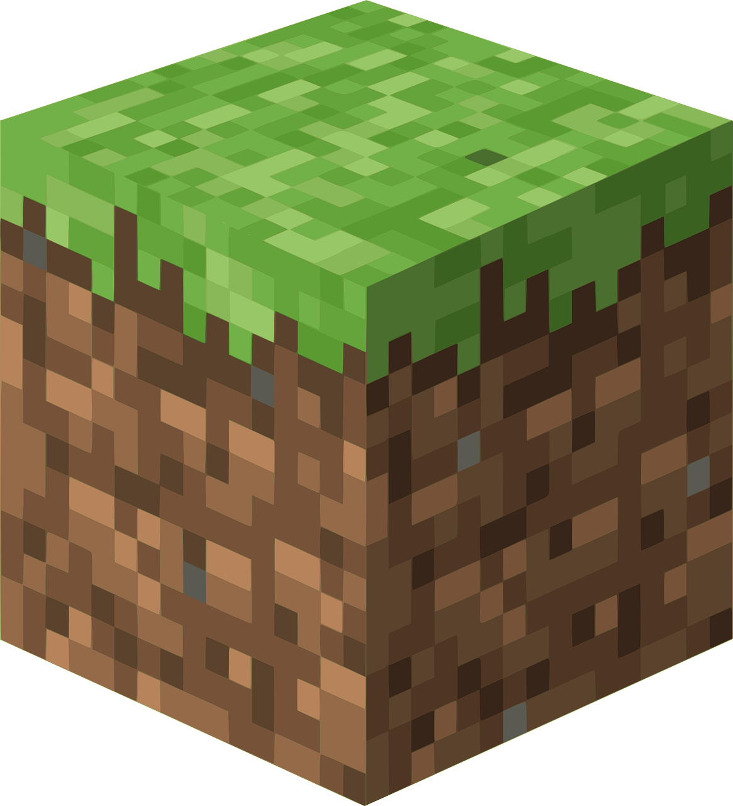

Minecraft is an incredibly popular game that almost needs no introduction. However, for the sake of uninitiated, I will still give it an introduction. An open-world survival and crafting game, Minecraft not only is loved by millions but is a game that is already used as an education tool for general earth science as it reflects real world biomes, habitats, and various physical phenomena. I may not be able to cover all the ways in which Minecraft serves as a vessel for learning, but I will try to go over a few example
A dirt block from the game, one of the most basic and common building materials.
Let's start off with circuitry. In our world, we use electricity to power many of our devices. Without it, we wouldn't have many of our modern conveniences. Electricity is transported, or flows rather, through circuits, but the actual mechanics behind how circuits work is a rather complex subject. However, minecraft uses an in-game item known as redstone as a way to teach and make use of circuitry to make automated contraptions. Much like in real world circuitry, redstone needs a power source, a load, and a wire (redstone acts as the wire and redstone torches act as power sources). Using redstone requires practice, but Minecraft is a game that invites creativity and exploration, so as long as the player keeps an open mind and doesn't give up, over time they will come to learn the ins and outs of redstone, which somewhat carries over into actual circuitry.
A basic diagram of a circuit.
Another area in which Minecraft teaches is environmental science. Within every world the player creates, multiple biomes that mirror their real world counterparts make up the area the character plays on. Tundras, forests, deserts, if you can name it, it's most likely represented in Minecraft in some way, with fitting flora and fauna to match. There are different types of trees for different forests, for example, that grow better in their respective biomes. Crops have different environmental requirements, some needing more sunlight and water than others, while some can grow underground. Through observation of these behaviors, players can intuitively take in the information given to them from their play experience, and it will likely match up with teh real world due to the care and love the developers have put into the game.
A Savannah: a dry transitional biome that is something of a cross between desert and forest.
Again, there's so many ways in which Minecraft can serve as a vessel for learning, but I cannot cover them all here. Despite that, I hope you've taken away that the game is well-loved for many reasons, one of which is its educational value